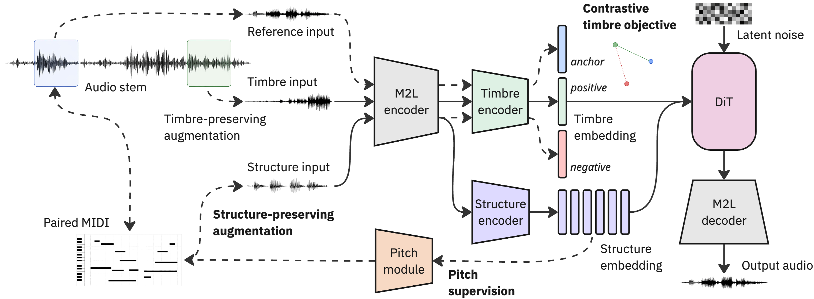

Supplementary webpage with audio examples.
Anonymous authors (paper currently under review)
In recent years, a branch of controllable music generation has focused on learning disentangled structure and timbre representations from music audio, enabling one-shot timbre transfer and controllable synthesis. Most existing approaches are trained in unsupervised or semi-supervised settings, relying on architectural biases, data augmentations, staged strategies, or adversarial objectives. However, recent studies reveal significant entanglement in their learned representations, raising concerns about their suitability for reliable timbre transfer. Moreover, these methods tend to define structure implicitly through pitch and tempo transformations, effectively treating timbre as the remaining information. In contrast, we place structure at the center of the disentanglement process by guiding it with symbolic musical information, specifically MIDI. We propose a symbolic-guided method that combines structure-preserving augmentations, pitch supervision, and a contrastive timbre objective. These components operate within the latent space of a pretrained music autoencoder, enabling more efficient training and inference. Output latents are generated using a diffusion transformer (DiT) trained under a rectified flow formulation. We evaluate our approach at both the representation and output levels. Experimental results demonstrate improved disentanglement and superior performance in one-shot timbre transfer, while achieving high reconstruction quality and enabling interpretable, controllable music generation.

This page presents qualitative listening examples for reconstruction and one-shot timbre transfer.
If the embedded audio is not displayed in your browser or repository view, the audio examples are also available here.
| Example | Reference | SS-VQ-VAE | AFTER | Ours | w/o aug | w/o pitch | w/o triplet |
|---|---|---|---|---|---|---|---|
| Acoustic Piano | |||||||
| Bass | |||||||
| Choir | |||||||
| Classical Guitar | |||||||
| Electric Guitar | |||||||
| Electric Keys | |||||||
| Reed | |||||||
| Strings |
For each example, we provide the source structure, the target timbre reference, and outputs from our model, ablations, and comparison baselines.
| Example | Source | Target Timbre | SS-VQ-VAE | AFTER | Ours | w/o aug | w/o pitch | w/o triplet |
|---|---|---|---|---|---|---|---|---|
| Acoustic Piano → Classical Guitar | ||||||||
| Bass → Acoustic Piano | ||||||||
| Choir → Electric Keys | ||||||||
| Classical Guitar → Choir | ||||||||
| Electric Guitar → Brass | ||||||||
| Electric Keys → Reed | ||||||||
| Reed → Electric Guitar | ||||||||
| Strings → Bass |